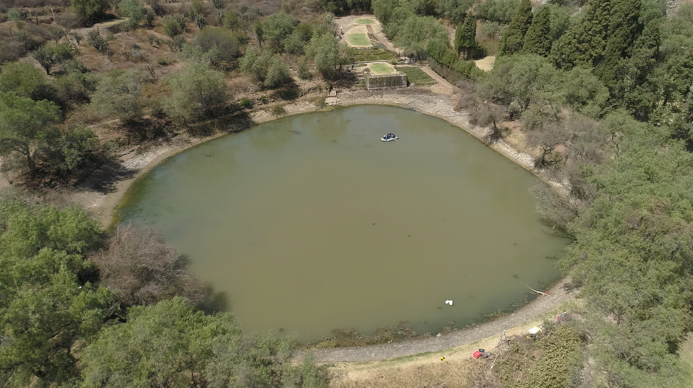
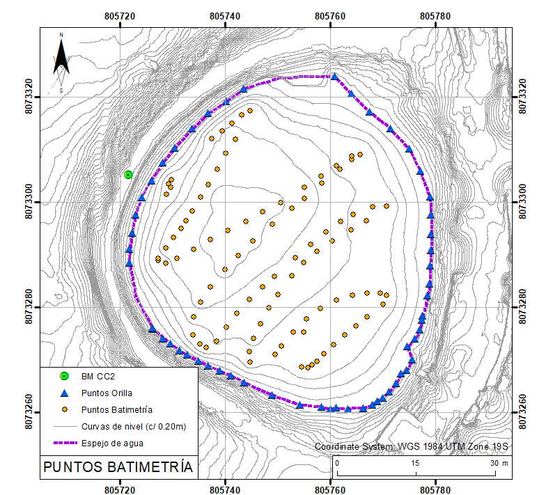
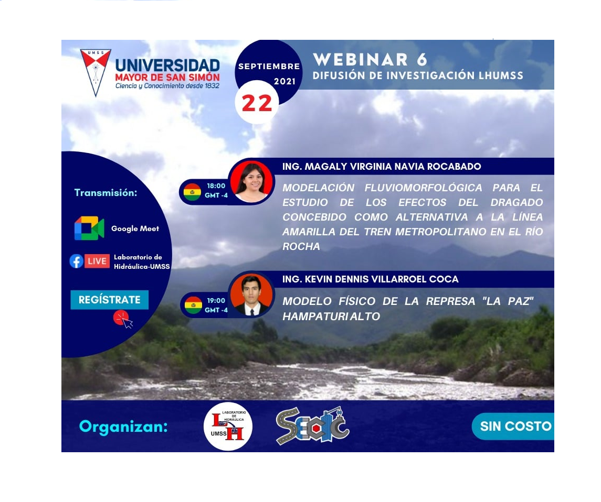

Undergraduate Research Assistant
Hydraulics Laboratory of Universidad Mayor de San Simón
Highlights
Skills
- GIS software: ArcGIS, QGIS, ang Google Earth Engine.
- Data Wrangling and Statistical Data Analysis: Python and R.
- Data Visualization: Matplotlib, Seaborn, and Plotly
- Development Tools: GoogleColab, and JupyterNotebook

Download data from rain gauge precipitation.
Location Titiri, Cochabamba.
Location Titiri, Cochabamba.

Topobatimetry of reservoir 2 in Country Club.
Location Cercado, Cochabamba.
Location Cercado, Cochabamba.

Contour lines of reservoir 2 in Country Club.
Made using ArcGIS.
Made using ArcGIS.

LHUMSS Research Dissemination Webinars.
Made using Canvas.
Made using Canvas.